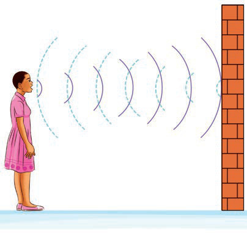

Maelezo ya picha: Msichana anasema kitu kuelekea ukutani. Mawimbi ya sauti yanagonga ukuta na kurudi kama mwangwi.Kielelezo namba 14: mwangwi unavyotokea.
Uliposimama kwenye ukumbi mtupu na kuita kwa sauti kubwa, ulisikia sauti ikijirudia. Kwa mfano, ukisema “hello” baada ya dakika chache utasikia neno “hello” tena. Sauti hii huitwa mwangwi. Kilichotokea ni mawimbi ya sauti yalitoka kwenye mdomo wako na kusafiri kwenye hewa ndani ya ukumbi, ikagonga ukuta mtupu na kurudi tena na kusababisha wewe kusikia sauti uliyoita. Sauti inapokutana na kizuizi au kitu kigumu kama ukuta au mwamba huakisiwa.
Kusafiri kwa sauti katika maada
Kazi ya kufanya namba 8
Kuchunguza sauti inavyosafiri katika maji
Mahitaji: Ndoo, maji, kengele au kitu chochote kinachoweza kutoa sauti na programu fikivu.